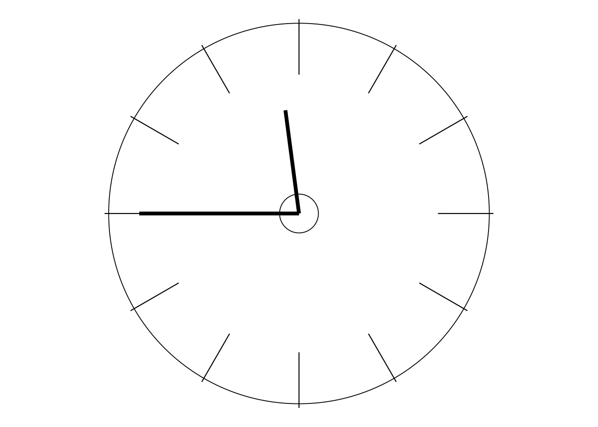
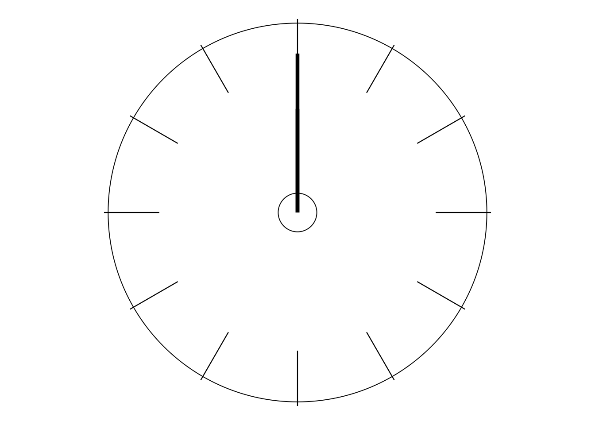
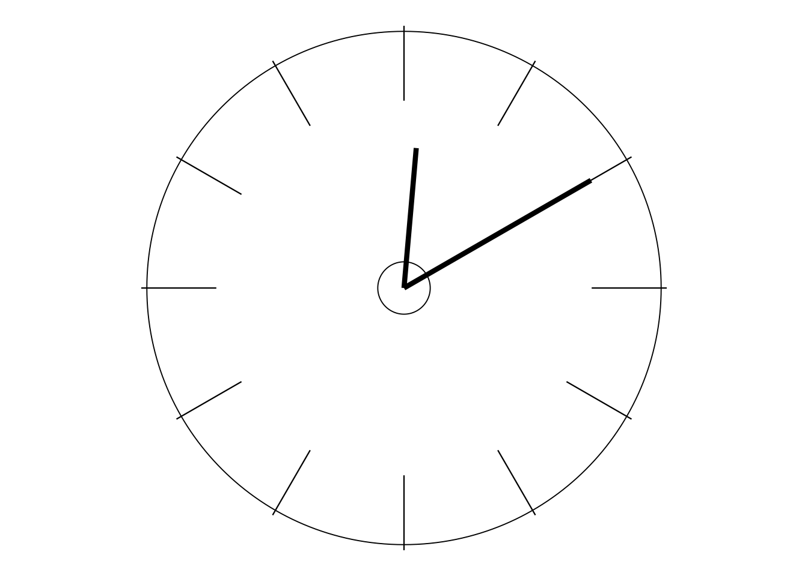

THE ATTRACTION OF DEMING’S WORK
Let me tell you now what first really began to attract me seriously to Deming’s work. It wasn’t the statistical ideas (as you might have thought, because of my background as a statistician). It was the fact that his teaching was so human! I saw and heard so much genuine, warm respect and empathy for humanity, individually and collectively. It was from him that I first heard ideas like “a company’s most important asset is its people”. But he really meant it (unlike some others from whom I’ve heard similar words). I heard scorn of management whose first reaction when anything goes wrong is to look around for whom to blame, the scapegoat. I heard passionate criticism of unemployment—or rather of management, and indeed government, that brings it about, be it accidental or intentional. It wasn’t that he was thinking about the cost of supporting the unemployed. In contrast, it was the cost of the waste of human potential and self-respect that concerned him. For confirmation, one could open his book Out of the Crisis at the very first page of its Preface—there’s no need to even get into the main text! Here’s a brief extract1 from that page (in which I wish the first few words were really true):
“It is no longer socially acceptable to dump employees on to the heap of unemployed. Loss of market, and resulting unemployment, are not foreordained. They are not inevitable. They are manmade.”
What else? Something that particularly appealed to me (I guess maybe because of my mathematical background) was the fact that his approach is eminently logical, scientific—in the best sense of those words. I discovered (although not immediately) that everything he came up with was very carefully and logically thought through, with plenty of supporting evidence. And I liked that—I don’t like taking things on faith, or on trust—I never have: I want reasons. Call me a “Doubting Thomas” if you must.
And what else? His philosophy of management is wholly system- or process-orientated. It sees things (including, very much, things to do with people) as full of interconnections, interdependences, interrelationships—as opposed to being largely isolated from each other. When I eventually realised that that was the nature of Deming’s work, it rang very true to me. Consider e.g. what I just said about looking for a scapegoat. A natural consequence of his thinking (and Shewhart’s) is that, when something goes wrong, it’s far more often the case that that’s due to the system within which people are working and living, rather than being attributable to the people themselves. What obviously follows is that it’s far more often the case that it’s the system that needs things doing to it, not the people. The Major Activity which concludes this first day of the course is directly related to this aspect of Deming’s teaching.
I wonder if that surprises you. Don’t worry. This is still rather new thinking for many people. And, almost by definition, new thinking is bound to be surprising.
I hope that this course will provide for you a good start to breaking through familiar old thinking, and to catching more than a glimpse of what seems to me to be a very refreshing breakthrough from the depressing, demoralising, bureaucratic, judgmental, blame-ridden, dog-eat-dog, inhuman nature of what manifests itself as “quality” in the view of much of modern management, and indeed modern government.
So it is no accident that “government” features in the full title of Dr Deming’s final book: The New Economics for Industry, Government, Education. How, for example, can industry survive and succeed if it is hampered by poor government and education systems which do not understand the needs of the future?
Activity 1-d is also on Workbook page 3.
Here is an example of a “request for action” that is exceedingly open-ended. You could content yourself by writing some notes on the first few thoughts that come into your mind. Or it could be the subject of a number of PhD theses! Since I’m calling this an “Activity” (not even a “Major Activity”!) I am indicating that my preference lies toward the former of those two extremes!
ACTIVITY 1-d
Considering the breadth indicated in the title of Dr Deming’s final book: The New Economics for Industry, Government, Education, it will be worthwhile for you to spend a little time thinking about the ways that the Government and Education systems in your country help or hinder Industry, and the quality of what it produces and provides. How might they be improved? And, again referring to that title, how might some “old” views of Economics also be a hindrance, and what might “New” views take into account?
In such an Activity you are not expected to be able to set the world to rights! Its purpose is to trigger some thoughts that might help you to make some useful connections as the course progresses.

Activity 1-e is also on Workbook page 4.
PAUSE FOR THOUGHT 1–e
This is today’s final Pause for Thought and it goes to the opposite extreme compared with the previous Activity. Here I’m just asking you to consider briefly something very simple in preparation for discussion tomorrow. No calculations, no deep thought—just quickly jot down a couple of opinions for future reference.
Suppose you are the manager of a telephone call centre. A performance-monitoring scheme is in operation. For each member of staff who is being checked in any particular week, 50 of her callers are phoned back and asked whether or not they were satisfied with how their enquiries had been dealt with. The average satisfaction rate is around 80%, i.e. on average 40 of the callers turn out to have been satisfied—or, looking on the negative side, on average 10 of the callers were dissatisfied.
At the end of each week you hold a “progress meeting” to comment on the results. Let’s look on the grim side to start with! How much worse than the average of 10 dissatisfied callers would the result need to be for you to feel justified in at least cautioning the member of staff concerned: “Watch it! Take more care! This isn’t good enough!”? Any result worse than average, i.e. 11 or more dissatisfied customers? Actually, it’s not unknown for a person to be criticised if she gets just the 10 dissatisfied customers: after all, using a not-uncommon phrase, that’s “only average”.
Please note that I am not indicating my approval of this or any other such scheme! To criticise people simply because, according to some set of results, they appear below average or even “only average” is, I suggest, a rather dubious judgment mechanism. After all, that means you’re bound to be criticising around half of them even if they are all performing brilliantly!
Naturally, we would not expect everyone to get exactly 10 dissatisfied callers and 40 satisfied callers every week (something to do with understanding variation!). Sometimes the result of the count will be better than average, sometimes worse. But ! how much better or worse would it be reasonable for us to expect “just by chance”?
So, to repeat the above question, how much worse than the average of 10 dissatisfied callers would the result need to be for you to feel justified in at least cautioning the member of staff concerned? 12 dissatisfied callers? 13 dissatisfied callers? 14? What performance level do you feel, as the manager, would warrant your attention? I am not asking for any logical argument here: just write down your “gut feel”.
On the bright side, how much better than the average of 10 dissatisfied callers would a result need to be for you to feel justified in congratulating the member of staff: “Well done! Nice work! Keep it up!”? 9 dissatisfied callers? 8 dissatisfied callers? 7 dissatisfied callers? Fewer?

Let me briefly comment on the matter of averages. For in the case of people who cannot understand averages, we shall have to work very hard to help them to understand variation!
Careless thought about the concept of “average” can have various peculiar consequences, either serious or humorous depending upon circumstances. I relate a few near the end of DemDim Chapter 10: “Failures with Figures”. For example, Dr Deming was once told of the occasion when the Trades Union Con- gress in Britain voted on the motion that no wage in the country should be below average. Apparently it failed by just three votes. Deming wryly commented: “How I wish it had succeeded!”. The TUC may have been following the example of the Australian Minister of Labour who was quoted as having said in 1973 that “We look forward to the day when everybody will receive more than the average wage”. Even Jim McIngvale, who will tell the story of his company Gallery Furniture here on Day 6, confesses when he fell into the same trap: “Of the 80 salespeople we had, 10 to 15 turned over [fired or quit] every month—and management wondered why half were still below average” (Day 6 page 10).
Sadly, in recent years, I have heard British politicians making what seem to be similar judgments not just about individuals but about hospitals and schools and branches of the police. The typical argument is that those which are below average should have something done to them to bring them above average. The other half are above average already, so why aren’t the rest? Think about it!
This and all other quotations from Out of the Crisis have been reproduced with the approval of the W Edwards Deming Institute and MIT Press. See https://mitpress.mit.edu/contributors/w-edwards-deming.↩︎